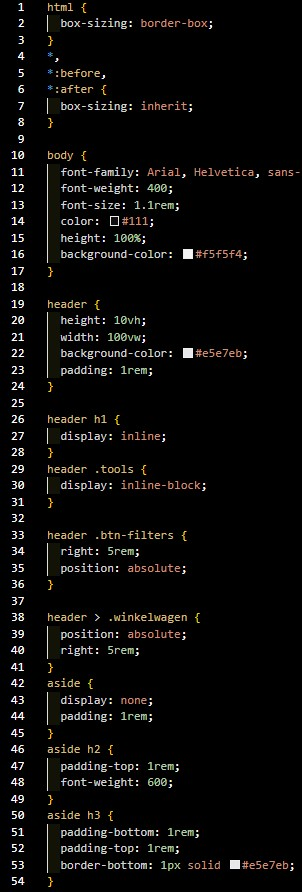
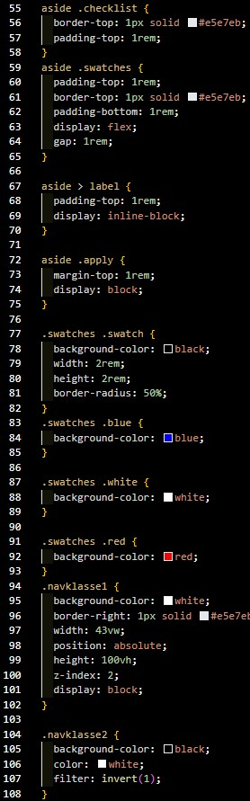
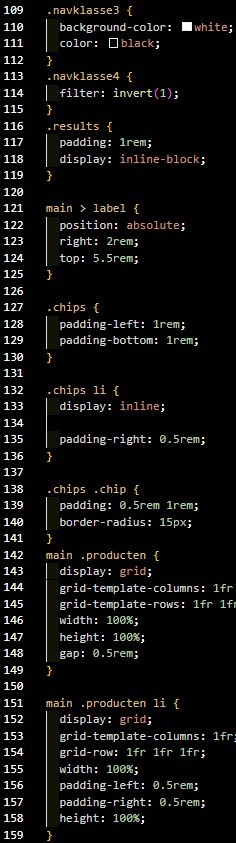
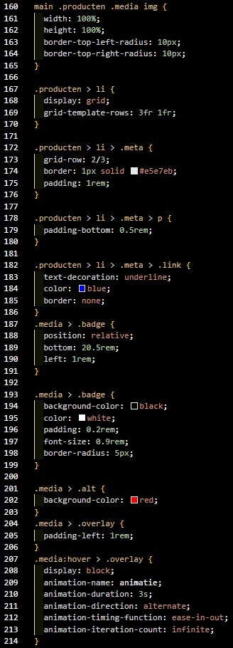
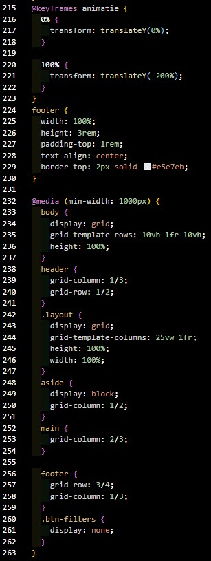

Show Website
Voor dit project ontwikkelde ik een moderne en responsieve
webshopinterface voor het fictieve merk Nordica in het kader van
het vak Web Technology. Het doel van de opdracht was om een
gebruiksvriendelijke en visueel aantrekkelijke website te bouwen
waarin bezoekers eenvoudig producten kunnen bekijken, filteren
en navigeren. Tijdens het volledige ontwikkelproces stond zowel
functionaliteit als design centraal.
Ik maakte gebruik van HTML, CSS en JavaScript om de
verschillende onderdelen van de website op te bouwen. De
structuur van de pagina werd zorgvuldig uitgewerkt zodat de
inhoud overzichtelijk en logisch georganiseerd bleef. Met CSS
werkte ik aan de volledige vormgeving van de interface,
waaronder de lay-out, kleuren, typografie en responsive
elementen. Hierbij hield ik rekening met verschillende
schermgroottes zodat de website optimaal functioneert op zowel
desktop, tablet als smartphone.
Daarnaast implementeerde ik interactieve functionaliteiten met
JavaScript. Zo ontwikkelde ik een filter- en sorteersysteem
waarmee gebruikers producten eenvoudiger kunnen terugvinden. Ook
voegde ik een dark mode/thema-switch toe om de
gebruikerservaring persoonlijker en moderner te maken. Verder
werkte ik aan een mobiele navigatie en interactieve componenten
die de website dynamischer maken.
Naast de technische uitwerking besteedde ik ook aandacht aan
gebruiksvriendelijkheid en gebruikerservaring. Ik probeerde een
duidelijke navigatiestructuur te creëren en een consistente
visuele stijl aan te houden doorheen de volledige website.
Hierdoor oogt de interface professioneel en intuïtief voor de
gebruiker.
Door dit project heb ik mijn kennis van front-end development
verder verdiept. Ik leerde efficiënter werken met responsieve
layouts, interactieve JavaScript-functionaliteiten en moderne
webdesignprincipes. Daarnaast verbeterde ik mijn
probleemoplossend vermogen door zelfstandig oplossingen te
zoeken voor technische uitdagingen tijdens het ontwikkelproces.
Dit project gaf me meer inzicht in hoe een moderne webinterface
opgebouwd wordt en hoe design en functionaliteit elkaar
versterken binnen een gebruiksvriendelijke website.
Verschil tussen bootstrap en css?
Het verschil tussen CSS en Bootstrap is vooral dat CSS een
stijltaal is, terwijl Bootstrap een framework is dat CSS (en
JavaScript) gebruikt om sneller websites te bouwen.
CSS (Cascading Style Sheets) gebruik je om zelf de vormgeving
van een website te bepalen. Hiermee kan je bijvoorbeeld kleuren,
lettertypes, marges, animaties en layouts aanpassen. Met gewone
CSS schrijf je alles zelf, waardoor je volledige controle hebt
over het design. Dat maakt het flexibel, maar het kost vaak meer
tijd.
Bootstrap is een vooraf gemaakte verzameling van CSS- en
JavaScriptcomponenten. Het bevat kant-en-klare stijlen voor
knoppen, navigaties, formulieren, grids en veel meer. In plaats
van alles zelf te schrijven, gebruik je bestaande classes van
Bootstrap. Daardoor kan je sneller een responsive website maken.
Belangrijkste verschillen
| CSS | Bootstrap |
|---|---|
| Je schrijft alle styling zelf | Gebruikt vooraf gemaakte stijlen |
| Volledige vrijheid in design | Sneller ontwikkelen |
| Meer werk en code | Minder code nodig |
| Geen ingebouwde componenten | Veel ingebouwde componenten |
| Je moet responsive gedrag zelf maken | Responsive systeem zit ingebouwd |





Video
In de video ziet u de werking van de website.